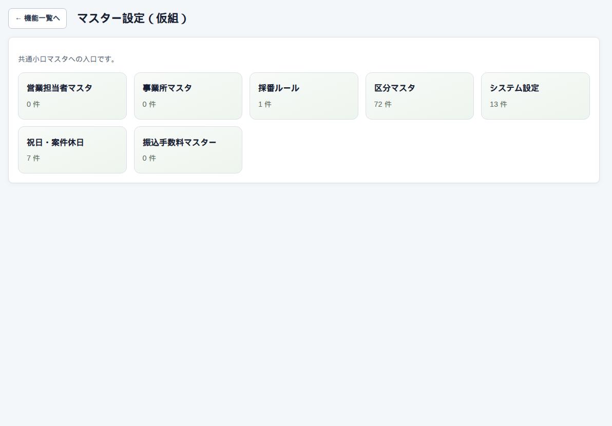
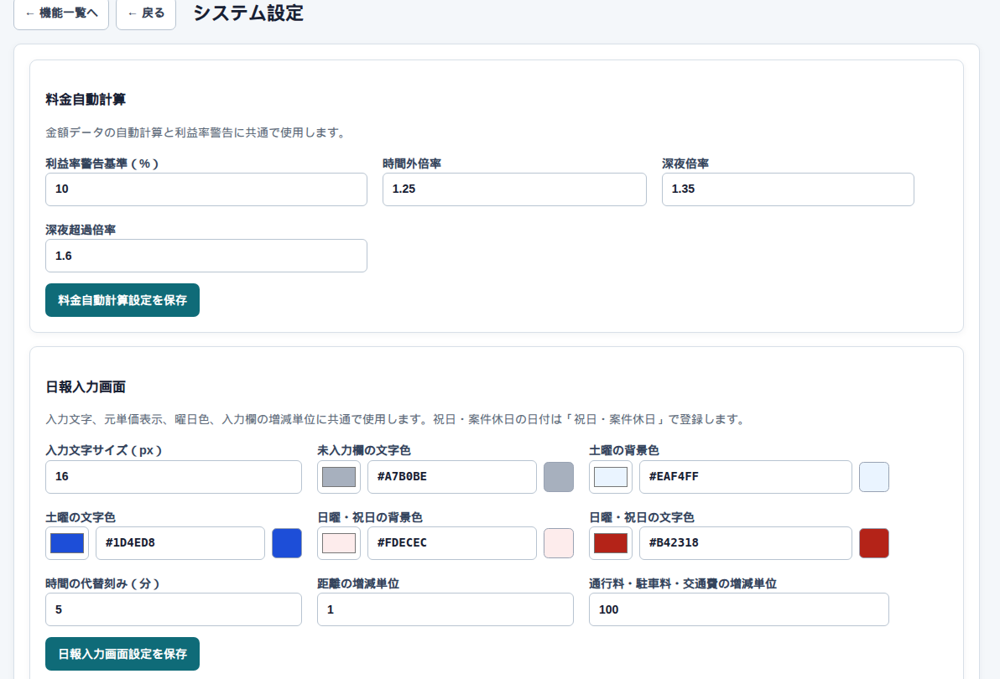

設定 → マスター設定
マスター設定
ハブ
担当者、事業所、採番、区分、祝日、振込手数料、銀行CSV、振込元口座など、会社全体の土台です。管理者・システム担当者・総務が使います。各カードの「？」がヘルプです。

システム設定の例

祝日と案件休日は、日報の色と料金の自動候補に使います。同じ日に両方あるときは、案件独自が判定の根拠です。適用する料金区分は1つだけです。
気をつけること
ここを変えると、これから入力する日報や帳票の見た目・候補に効きます。過去の確認済み日報や発行済みPDFは、当時の内容のままです。